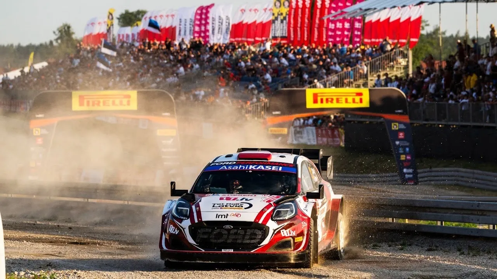
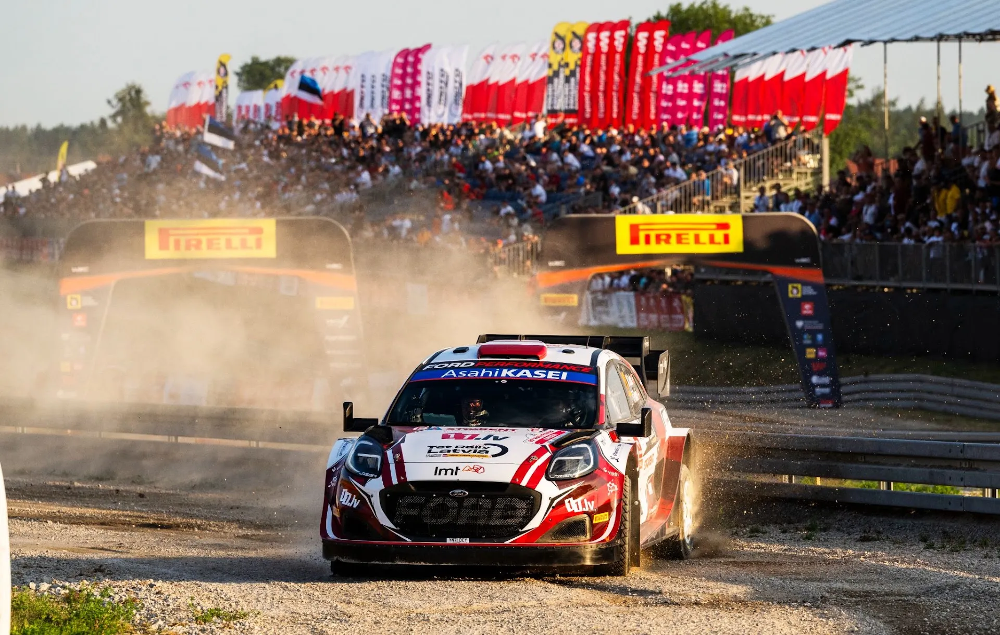
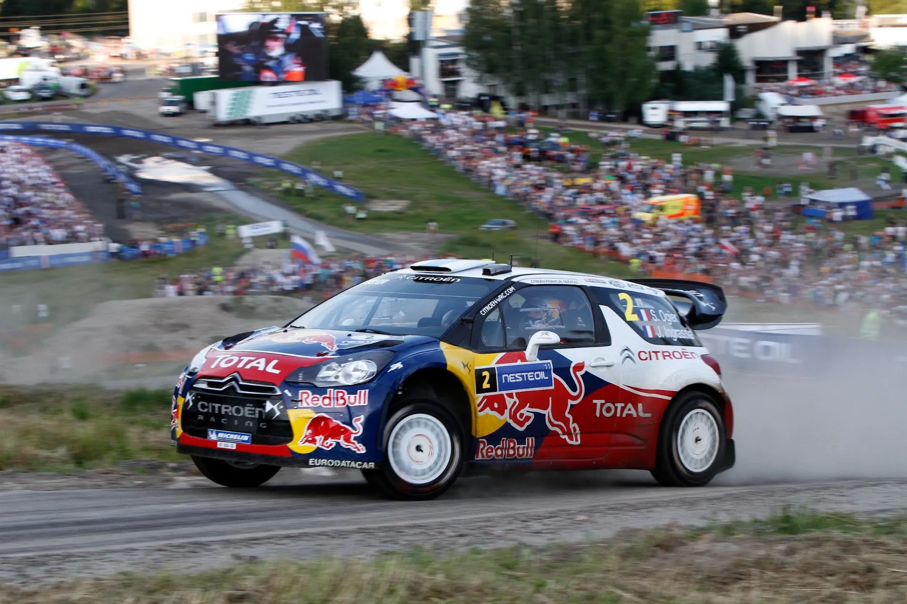
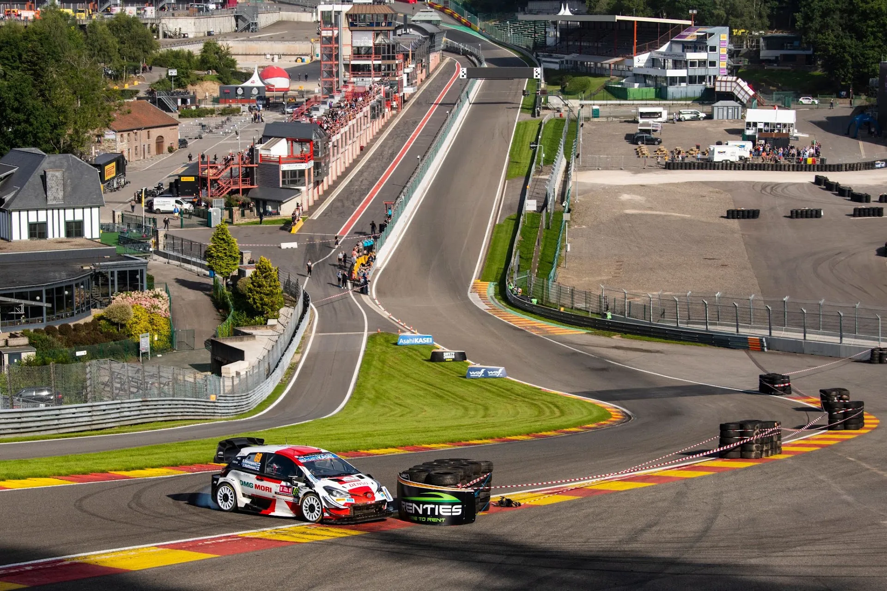
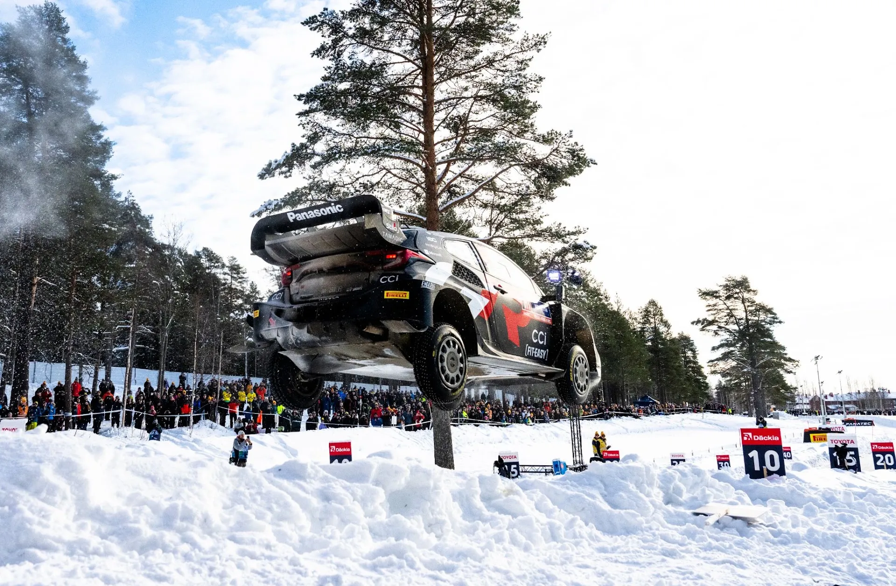
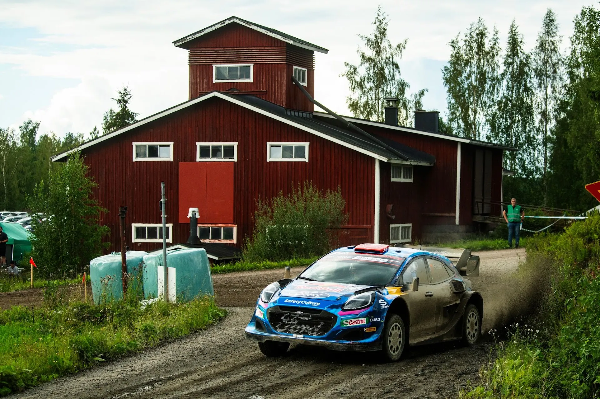
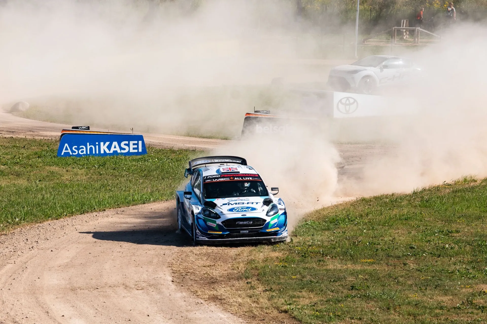

Five of the Worst Power Stages in WRC History
Last weekend's Rally Poland was a bit of a mixed bag. A very competitive event that had a nice fight for the lead, nice stages, and a very impressive debut from Martins Sesks, was overshadowed by spectator issues, that led to many stages being interrupted, or outright cancelled. When I say "nice stages"... there are some exceptions. The Mikolajki stage (not the SSS, even though that was also overused) was absolutely terrible, even more so because it was the event's Power Stage. The organisers tried to replicate Rally Sweden's Umea stage, so that the event could end at the Mikolajki Arena, but they somehow managed to execute it in a worse way than the Swedes. An uninspiring early gravel section was followed by an almost straight tarmac road with chicanes, in order for the stage to reach the Mikolajki Arena... yikes.

After seeing the Mikolajki Arena 5 times last weekend, I think I don't need to see it again for atleast one year, otherwise I will be sick
Jaanus Ree / Red Bull Content Pool
So that got me thinking, what are some other examples of absolutely dreadful Power Stages? For this list I will not be including stages that were purely Super Special Stages, like Circus Maximus Trier from Rally Germany for example, but I will count stages with "Mickey Mouse" sections.
Laajavuori - Rally Finland 2011

GEPA pictures / Red Bull Content Pool
2011 was the first year that the modern concept of the Power Stage was used. Most of the stages were under 10km, as the Power Stage was broadcasted live, and the technology wasn't quite optimised in order for longer stages to be broadcasted live. For Finland, the organisers decided to choose Laajavuori as the second ever Rally Finland Power Stage (remember that there were 2 of them in 1999). The problem with Laajavuori is that it is... rather Mickey Mouse. It was the slowest non-SSS stage of the event, there weren't any jumps, which is something Rally Finland is famous for, and the surface of the stage was quite sandy compared to the mostly packed and solid surface that can be found in any other stage of the event. That surface meant that by the end of the 2nd pass, the stage was filled with ruts. A Power Stage is supposed to be representative of the rally, and this was anything but. Laajavuri will return as the Power Stage in 2024, with 2 laps this time...
The broadcast of the Power Stage
Francorchamps - Ypres Rally 2021

Jaanus Ree / Red Bull Content Pool
Belgium hosted their first ever WRC event in 2021, with the first two days of the rally being held on stages from the famous Ypres Rally. However for Sunday, the crews had a massive liaison to cover, with the rally being moved all the way down to Spa, and the Spa-Francorchamps circuit. It should be mentioned that the Ypres Rally in 2020 was due to do the same, but the event was cancelled due to the COVID 19 pandemic. The Francorchamps stage was... underwhelming to say the least. The circuit sections of the stage looked dull, way worse than Rally Monza, and the stage ended at the RX circuit. With the Spa Rally having a very solid palette of stages themselves, Ypres' Spa excursion in 2021 felt like a missed opportunity. Unsurprisingly, the circuit was absent from the 2022 itinerary.
Highlights from the Francorchamps stage
Umeå - Rally Sweden 2022-24

Jaanus Ree / Red Bull Content Pool
Rally Sweden moved to Umeå in 2022 in search of more snow compared to Karlstad. A new rally location meant a whole new itinerary, and Power Stage. However the Umeå Power Stage left a lot to be desired. Parts of the stage were ran as many as 4 times, leaving the Mickey Mouse ending of the stage heavily rutted by the time it was time for the Power Stage run. The stage itself, was just mediocre. Nothing more than straights and junctions before the road connected to the Red Barn Arena part of the stage. And unsurprisingly it's quite an eyesore for the TV viewers to see the same parts being run over and over and over again.
Onboard of the "Mickey Mouse" section of the stage
Himos - Jämsä - Rally Finland 2023

Jaanus Ree / Red Bull Content Pool
After Laajavuori, Rally Finland unfortunately finds itself on the list again, this time with last year's Himos - Jämsä stage. Ruuhimäki, which was the closing stage of the rally from 2018, couldn't be used as the Power Stage due to road-works in the podium area, which made the organisers search for an alternative. They opted to use Himos. The problem with this stage is that once again it's not representative of the rally, with it being the slowest non SSS stage of the rally. There were also some quite rough sections, and the end of the stage was quite Mickey Mouse, with it being in the Himos parking area.
Onboard of the stage
Tartu Vald - Rally Estonia 2021

Jaanus Ree / Red Bull Content Pool
We end the list with Rally Estonia, and Tartu Vald. For 2021 the Rally Estonia organisers opted to use the Tartu Vald stage both as an SSS and as the event's Power Stage. The route of the Power Stage was a rather short 6.5km, with the last 2km being identical to the Super Special. Tartu Vald finds itsef on this list because yet again it's not representative of the rally, with an average speed of just 65km/h, and many Mickey Mouse sections. The previous two runs of the SSS part of the stage left that section quite rutted also, but the part that wasn't used in the SSS wasn't ideal either, with roads that were very twisty, sandy and narrow. Basically, it was nothing like the rest of the rally, and it felt like an unnecessary long Super Special.
Highlights from the Tartu Vald Power Stage


Comments